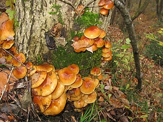

なめこの生産量 都道府県ランキング
全39県の順位と、とれた量
なめこが日本でいちばん多くとれるのは新潟県です。6,409 tで、全国（2万4,546 t）の26%を占めます。

| 順位 | 都道府県 | 生産量 | 全国に占める割合 |
|---|---|---|---|
| 1位 | 新潟県 | 6,409 t | 26% |
| 2位 | 長野県 | 5,073 t | 21% |
| 3位 | 山形県 | 4,114 t | 17% |
| 4位 | 福島県 | 1,552 t | 6.3% |
| 5位 | 北海道 | 1,268 t | 5.2% |
| 6位 | 三重県 | 1,038 t | 4.2% |
| 7位 | 宮城県 | 1,005 t | 4.1% |
| 8位 | 群馬県 | 787 t | 3.2% |
| 9位 | 大分県 | 631 t | 2.6% |
| 10位 | 岐阜県 | 518 t | 2.1% |
| 11位 | 埼玉県 | 304 t | 1.2% |
| 12位 | 秋田県 | 278 t | 1.1% |
| 13位 | 青森県 | 227 t | 0.9% |
| 14位 | 茨城県 | 184 t | 0.7% |
| 15位 | 石川県 | 158 t | 0.6% |
| 16位 | 和歌山県 | 110 t | 0.4% |
| 17位 | 山梨県 | 46 t | 0.2% |
| 18位 | 栃木県 | 34 t | 0.1% |
| 19位 | 岡山県 | 27 t | 0.1% |
| 20位 | 鳥取県 | 25 t | 0.1% |
| 21位 | 福井県 | 21 t | 0.1% |
| 22位 | 静岡県 | 11 t | 0.0% |
| 23位 | 広島県 | 8 t | 0.0% |
| 24位 | 岩手県 | 4 t | 0.0% |
| 25位 | 島根県 | 3 t | 0.0% |
| 26位 | 兵庫県 | 3 t | 0.0% |
| 27位 | 東京都 | 2 t | 0.0% |
| 28位 | 福岡県 | 2 t | 0.0% |
| 29位 | 千葉県 | 1 t | 0.0% |
| 30位 | 京都府 | 1 t | 0.0% |
| 31位 | 高知県 | 1 t | 0.0% |
| 32位 | 神奈川県 | 1 t | 0.0% |
| 33位 | 富山県 | 1 t | 0.0% |
| 34位 | 愛媛県 | 1 t | 0.0% |
| 35位 | 熊本県 | 0 t | 0.0% |
| 36位 | 愛知県 | 0 t | 0.0% |
| 37位 | 滋賀県 | 0 t | 0.0% |
| 38位 | 山口県 | 0 t | 0.0% |
| 39位 | 香川県 | 0 t | 0.0% |
この数字について
- 分類：きのこの仲間
- 全国の生産量：2万4,546 t
- この数字が表すもの：生産量（とれた重さ）
- 調査：特用林産基礎資料 令和7年
- 39県分を調査（調査していない県は順位に入りません）
なめこの生産量について、よくある質問
- なめこの生産量が日本一の都道府県はどこですか？
- 新潟県です。特用林産基礎資料（令和7年）で6,409 tでした。
- なめこの生産量ランキング2位・3位はどこですか？
- 2位は長野県（5,073 t）、3位は山形県（4,114 t）です。
- なめこの生産量ランキング4位・5位はどこですか？
- 4位は福島県（1,552 t）、5位は北海道（1,268 t）です。なめこの全39県の順位は上の表のとおりです。
- なめこの全国の生産量はどれくらいですか？
- 2万4,546 t（令和7年）です。